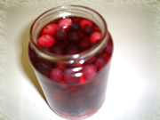

3月の日記(1)
[前の日記]
[過去の日記一覧へ]
[次の日記]
新しいものは上になります。下から読んでね(^^)
2002年3月10日(日) くもり
『ピーターパン2』
久しぶりにディズニー映画を見ました。ピーターパンの新しいバージョン、
"Return to Neverland"
。ディズニーアニメはもともと好きだけど、やっぱり今回もおもしろかった(^^)
ウェンディが大きくなってお母さんになり、夫と２人の子供がいて、戦争がはじまってお父さんは戦争に行って。。。という暗い背景。そこで、娘のジェーンがピーターパンに会うという設定。ピーターパンは、最初、ジェーンをウェンディかと思って喜ぶ。でも、性格がずいぶん違っていて。。。
これが初めて見る映画だったら登場人文の描写がちょっと少ない気がするんだけど、ピーターパンなら誰もが知っているので、あれくらいで、くどくなくていい。とは言え、ピーターパンのお話はもう忘れてるんだけど(^^;。オリジナルのピーターパンに出てくるウェンディは優しくておとなしい子だったっけ？
ディズニーは最近、オリジナルの続きを、ディズニーのオリジナルで作っていることが多いらしい。知っているのストーリーの続きがあるなんて楽しい。これからもどんどん出して欲しいな。私は「シンデレラ姫」が好きなんだけど、その後のシンデレラのお話がビデオとDVD版で出ていることがわかった。。。買ってしまいました(^^;
2002年3月8日(金) くもり＆雨
『果実酒 -ベリー酒-』
 果実酒にちょっと凝っている。これは、ブルーベリーとラズベリーで作ったもの。３週間前、安く売っていたのでやってみようと思ったの。ウォッカも買って来た。雑誌やWebを読んでいて、たぶん、1:3:5の割合くらいがちょうどいいような感じがするので、お砂糖１００g、果実３００g、ウォッカ５００gで作ってみた。
２週間おいたらおいしかった( ^^)／□☆□＼(^^ )。色もきれいで。こんな感じに炭酸で割って飲んでみた。作るのに２週間もかかったのに、1日で飲んでしまった(/_;)。その後、栗原はるみの雑誌に、飲み終わったらお砂糖をたして煮詰めたシロップを割って飲んでもおいしい、と書いてあったので、早速つくってみた。そのシロップ割りもほとんど飲み終わった。
そして今は、オレンジ酒を作っている。でもできあがるまで1か月かかるらしい。
ただひとつ問題がある。「氷砂糖」が見つからない。前回も今回も、しょうがないのでグラニュー糖を使っているのだけど、お砂糖が下の方に沈んでしまうの。たぶん、氷砂糖を使えば、いい感じに解けていくんだろうなぁ。
おとといから久しぶりに雨。このあたりで、３月になっても雨が降っているのって、めずらしいらしい。
2002年3月5日(火) 晴れ
『スーパーで買い物--Express Lane』
週に一度、スーパーマーケットで買い物します。買い物を終えてレジにならぶとき、大きなスーパーマーケットだと、必ず、少ししか買わない人のためのレジがあります。「Less than 12 items」などと書いてある場合は、自分が１２個以下しか買わない場合に並ぶことができ、その列の人は皆ちょっとしか買わないので、列が長くなっても他の列に比べて早く進みます。
私は一度、20個くらいあるときに並んでしまって、それでも会計はしてくれるのですが、「１２個以上あるでしょ！」と怒られました。そのときは、 itemsって意味がよくわからなくて、１２"種類"以下ならいいと思って、ヨーグルトとか同じ種類のものは１つとカウントしたのでした(^^;
多少こえてしまってもしょうがないのですが、意外にみんなマナーを守ってると思います。こういう部分はとても便利です。よく、1か月に1度くらいしか買わないんじゃないかと思われる人が、子供が２人くらい入れる大きな手押しかごにいっぱいつめてることもよくありますから。そういう人ばかりが並んでいるとき、「Express Lane」なら、多少たくさんの人が並んでいても必ず早いのです。
こちらでの一般的な買い物方法は「現金」「クレジットカード」「ATMカード（銀行のカード）」「小切手（チェック）」の４種類ですが、このうち、「ATMカード」「小切手（チェック）」は、この「Express Lane」では受け付けてくれない場合が多いです。
クレジットカードや現金と違って、「チェック」の場合は車の免許の提示を求められ本人であることを確認したり、電話番号を書き込ませられた上でサインをします。「ATMカード」払いの場合にはキャッシュバックというのがあり、ATMカードがクレジットカードがわりになると同時に、現金をレジで引き降ろすことができます。両方とも、時間がかかってしまうのですね。だから、この「Express Lane」では利用できないことがよくあるんです。
よく考えられた制度ですよね。
2002年3月2日(土) 晴れ
『春』
３月になりました。こっちはもうずいぶん暖かくなりました。半そでとかノースリーブで歩いてる人も見かけます。セーターを着ている人も、もちろんいます（私(^^;）。花もかなり咲き乱れています。さくら、りんごの花、その他いろいろ。
部屋の飾りも今は冬用のものなので、そろそろしまわなくては。リースやキャンドル、せっけんなど。それから、Tax Return(税金申告)もやらなくては。やることたくさんあるなぁ。
個人的に私の周りでは風邪が流行っているようです。私も先週、1日だけ背中が痛くて、すごく早く寝ました。気をつけてくださいね。
ところで今年に入ってから、仕事が楽になってきたおかげで時間がたっぷりできて、Webでいろんなページを回るようになりました。それで、つくづく感じました。私のページ（特に表紙）のダサイこと(^^;。配置もすごく簡単で平凡だし、色も黒ばっかり。もうちょっとなんとかしたいと思うようになりました。
それで、ホームページ作成方法などを読んでます。私が昔、読んだ頃のものは本当に簡単で平凡なことばかりだったので。でも、自分のページを作ることにあたっては、いろいろ決めなくちゃいけないこともあって、まだ時間がかかりそう。でも、楽しみにしていてくださいね(^^)
新しいものは上になります。下から上に読んでね(^^)
[前の日記]
[過去の日記一覧へ]
[次の日記]
[ホーム]